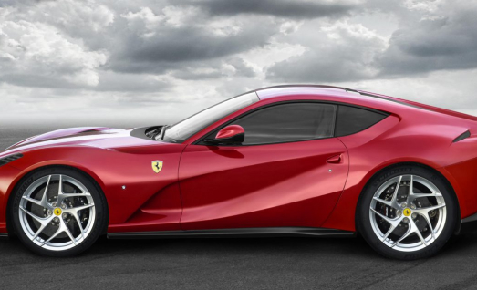
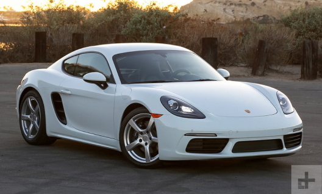
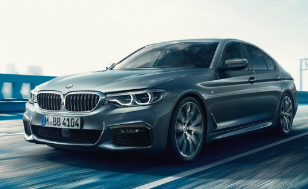

Ferrari

A Ferrari é uma fabricante italiana de automóveis (tanto de competição, como esportivos de luxo),
fundada por Enzo Ferrari em 1939 como Scuderia Ferrari.
Inicialmente, a Scuderia Ferrari patrocinou pilotos e carros de corrida fabricados, tendo, no ano
de 1946, começado a sua produção independente, porém, em 1969, 50% das ações da companhia foram
vendidas para a Fiat e que em 1988 a passou a deter 90% da empresa ao com prar na época a
comprar a parte de Enzo Ferrari que faleceu naquele ano.[2] Em 2014 a Ferrari vendeu 10% das
ações da Ferrari para o filho de Enzo, Piero Ferrari, faz parte do grupo FCA. A empresa está
sediada na cidade de Maranello, no norte da Itália.
Em 2016, por meio de uma cisão, a Ferrari se separou da FCA e fez um IPO de suas ações na Bolsa
de valores e passou a ter suas ações e operações geridas pela empresa holandesa FE Interim B.V.,
criada para esta finalidade.[3] famoso símbolo é um cavalo negro que tinha quatro patas apoiada
no chão e agora tem duas, empinado num fundo amarelo, sempre com as letras S F de Scuderia
Ferrari. O cavalo era originalmente o símbolo do Conde Francesco Baracca, um lendário "asso"
(ás) da força aérea italiana durante a Primeira Guerra Mundial, que o pintou na lateral de seus
aviões.
Baracca morreu muito jovem em 19 de Junho de 1918, abatido após 34 duelos vitoriosos e muitas
vitórias em grupo, tornando-se assim um herói nacional. Baracca queria o cavalo empinado nos
seus aviões porque a sua esquadra, os "Battaglione Aviatori", fora inscrita num regimento da
Cavalaria (as forças aéreas estavam nos seus primeiros anos e não tinham administração
separada), e também porque ele mesmo tinha a reputação de melhor cavaliere (cavaleiro) de sua
equipe.
Porsche

A marca alemã Porsche foi fundada em 1931 por Ferdinand Porsche e o seu filho Ferry Porsche.
Ferdinand Porsche já era conhecido antes de fundar a Porsche, ele havia trabalhado para outras
marcas, tais como a Volkswagen.[2] Havia também lançado em 1900 o primeiro automóvel híbrido.
Em 1934 Ferdinand Porsche, depois de lhe ser solicitada a criação de um automóvel acessível a
todos os alemães, criou o Volkswagen Sedan.[3] O Sedan serviu de base mecânica ao Type 64 criado
em 1939 e ao Porsche 356 produzido em 1948, sendo este o primeiro Porsche a ser produzido.
O Porsche 356 recorria em grande parte às peças utilizadas no Volkswagen Sedan, tais como
motorização traseira com refrigeração a ar. Mais tarde o 356 viria a ser totalmente construído a
partir de peças Porsche. A utilização de um motor com refrigeração a ar e localização traseira
foi desde o início, a principal característica da Porsche. Em 1951 Ferdinand Porsche morre
devido a complicações de um enfarte, nesse mesmo ano a Porsche vence a classe nas 24h de Le Mans
com o Porsche 356 SL, conseguindo assim notoriedade internacional.
BMW

As raízes da BMW estão ligadas a Karl Rapp e Gustav Otto. Em 1917, a emp0Rapp otorenwerke
Byertoren Werke GmbH,A 18. Em 1916, a empresa Flugmaschinenfabrik Gustav Otto foi incorporada à
Bayerische Flugzeug-Werke AG (BFW) a pedido do governo.
A BMW AG posteriormente transferiu suas operações de construção de motores – incluindo a empresa
e os nomes da marca – para a BMW, em 1922. A data de fundação da BMW, 6 de março de 1916, entrou
para a história como a data de nascimento da Bayerische Motoren Werke AG.[2]
Inicialmente a Bayerische Motoren Werke AG foi fundada com o intuito de produzir motores para
aviões, mas após a Primeira Guerra Mundial, devido ao Tratado de Versailles, foi proibida de
construí-los. Por esse motivo chegou a produzir motocicletas, e mais tarde dedicou-se à
fabricação de automóveis.
Até há pouco tempo a própria BMW dizia que o seu símbolo representa uma hélice de avião a girar
juntamente com o símbolo da Baviera, mas em descobertas recentes, a BMW alterou a sua versão
sendo o azul/branco proveniente de uma antiga bandeira da Baviera. O símbolo BMW foi estampado
na carroceria de um carro pela primeira vez em 1928.[3] A BMW historicamente, sempre esteve
envolvida nos desportos motorizados, inicialmente nas motocicletas e posteriormente nos
automóveis. Durante a 2.ª Guerra Mundial, a BMW usou cerca de 30 mil trabalhadores forçados em
sua fábrica, utilizados na produção de veículos terrestres e motores para os aviões da
Luftwaffe.[4]